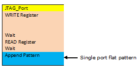
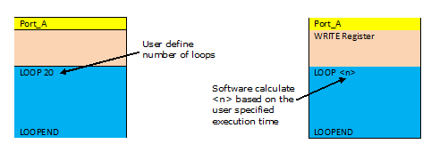
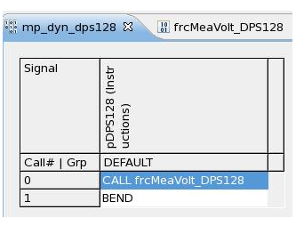
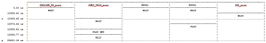

Using the CCT Multi-Port Sequencer Synchronizer API
Appending a flat pattern
A single-port flat pattern is to be appended to the assigned port of the burst.
You can repeatedly append the single-port flat pattern n times, where n ≥ 1 (default 1). The single port pattern is checked against the target port and must be made up of the unique target port.

Playing a flat pattern
A single-port pattern with LOOP/END sequencer command is to be appended to the assigned port of the burst.
Such appending can be looped (repeated) n times, where n ≥ 1 (default 1). Alternatively, the execution time (t) of the loop section can be assigned and the required number of loop times (n) is automatically determined, so that the actual execution time of the loop section is not shorter than the required execution time but also not longer than the time required for (n+1) times of the loop section.
These single port patterns are copied to a new pattern, the loop count <n> adjusted to suit, and the new pattern is appended to the target port of the burst. The new single port pattern is assigned the original pattern name with a postfix number reflecting the assigned loop count: <original name>_<n>.

Creating a protocol type label on transaction ports
You can create a protocol type label using PA and then attach it to the multiport burst. You must also complete the following:
- Define the protocol, timing, and level.
- Assign pins to roles in the protocol.
- Create PA wrapper APIs.
The Multi-port Sequencer Synchronizer API invokes PA wrapper APIs to generate a protocol type label that is then attached to a multi-port burst.
The default sync mark to attach the protocol type label is the first vector of the multiport burst label. However, you can assign a custom sync mark to which the protocol type label is attached.
The Multi-port Sequencer Synchronizer API checks the transaction port against the multi-port burst, ensuring that there is no overlap pins between the transaction port and any port in the multi-port burst.
Example
Example code for checking the transaction port against the multi-port burst:
CCTMultiportSync Sync;
Sync.registerSyncPort(Lshift::getInstance(tsName));
Lshift::getINstance(tsName).write(0x18, 0x22);
Lshift::getINstance(tsName).write(0x18, 0x86);
Lshift::getINstance(tsName).read(0x18, "readID1");
Lshift::getINstance(tsName).readExpect(0x18, 0xFE);
Lshift::getINstance(tsName).getReadValue("readID1") //get the read value marked as "readID1"Adding a sequencer‑controlled DC to an assigned port
The sequencer‑controlled DC test uses a digital channel as an instrument so that it can be mixed with those activities on the same port that is not PA transaction port. When making sequencer‑controlled DC tests on dedicated pins, other pins will issue break waveforms.
For a sequencer‑controlled DC test, a single port main pattern at the assigned port is created for which the main label consists of only one JSUB command to call a sub-label. You must assign the name of main label and sub-label.
The user defined MSET (created by PPMU_XXX is downloaded to the sub-label that you assigned. The main label and sub-label are created automatically and then appended to the assigned port of multi-port burst. You must ensure all pins in the MSET belong to the target port.
Example
Code example for adding a sequencer‑controlled DC to an assigned port:
CCTMultiportSync Sync;
DCDynamicPort::getInstance().setPort("pPPMUDC");
Sync.registerSyncPort(DCDynamicPort::getInstance());
DCDynamicPort::getInstance().PPMU_Relay("DC_Pin1", "PPMU_ON", 20 ns);
DCDynamicPort::getInstance().PPMU_Setting_VForce("DC_Pin1", vin V, 10 mA, -12 uA, 12 mA, 10 ns);
DCDynamicPort::getInstance().PPMU_Relay(MeasPin, "PPMU_ON", 20 us);
DCDynamicPort::getInstance().PPMU_Setting_IForce(MeasPin, "CLAMP_ON", 0 uA, 100 uA, -1 uA, 1 uA, 0.002 ms);
DCDynamicPort::getInstance().PPMU_VClamp(MeasPin, "CLAMP_ON", 0, 4 V, 0.1 us);
DCDynamicPort::getInstance().PPMU_Meas(MeasPin, "VMUM", "PVAL", 2, 10 ns);Adding a dynamic DC test to an assigned port
You must define a dedicated port that includes only DC Scale pins (DPS32, VI32, DPS128 and DPS64) and define its synchronized port-derived class.
You must provide a template with the following structure to hook the DC Events:

The CCTMultiPortSync API creates a new label (multi-port burst name) named "MPB_(CCTgetTestsuiteName)" at the assigned port by copying the user-defined template pattern and adding a DC event to the vector #32.
Example
Code example for adding a dynamic DC test to an assigned ports:
CCTMultiportSync Sync;
DCDynamicPort::getInstance().setPort("pDPS128");
Sync.registerSyncPort(DCDynamicPort::getInstance());
DCDynamicPort::getInstance().DPS_MeasVoltageRange(mDpsPins, 3.0);
DCDynamicPort::getInstance().DPS_Force("DPS128_2"), vin, 50 mA);
DCDynamicPort::getInstance().DPS_MeasVoltage(mDpsPins, 2);Adding a digital capture test pattern to an assigned port
A digital capture pattern can be automatically generated using the DigitalCapturePort class. This includes the correct setup of digital capture vector variables. Digital capture patterns can be useful for an ADC test where data needs to be captured on a digital port at certain intervals while a stimulus is being applied. The DigitalCapturePort class can only insert captures at certain times/vectors.
Preparing HW trigger patterns for analog or RF tests
The PortScale RF instruments/cards and mixed-signal cards (MCB, MCE) are controlled by digital trigger lines during the execution of their respective programs. A typical RF sequence requires multiple RF and Analog cards. To generate an RF-modulated signal at the signal pin, multiple cards of the RF subsystem must be triggered at different points in time, by multiple digital trigger lines. You must set up a sequence using the test method to synchronize RF-modulated signal with events on other ports.
Running the multiport burst
After the multi-port burst pattern is created, it can be executed like any other multi-port burst pattern.
Creating burst pattern across test suites with the CCF framework
In a CCT group, each test suite has its own multi-port burst pattern. When it is executed in concurrent mode, it can create a concurrent multi-port burst pattern across test suites.
A data structure to store the assembled multiport burst
"CCTMultiport Sync API" can return a data structure describing the contents of the assembled multiport burst. The amount of information shown is determined by the Development Mode parameter selected.
Visualize the synchronization across ports
The multi-port burst pattern is constructed and displayed in the UI Report window, illustrating all synchronizations of all ports.
Sync.dumpMPBGraph();

Debug Level
Sets the debug level of CCTMultiportSync. By default, the debug level is set to 0x0.
The debug level is defined by the following mask bits:
CODE_TRACE_LEVEL_DATALOG 0x1CODE_TRACE_LEVEL_GRAPH 0x2CODE_TRACE_LEVEL_SAVE_DATA 0x4CODE_TRACE_LEVEL_TIMING 0x8CODE_TRACE_LEVEL_DETAIL 0x100 (Decimal: 256)CODE_TRACE_LEVEL_FUNC_CALL 0x200 (Decimal: 512)
Development Mode
Sets the develop mode of the MultiportSync instance. It skips burst in Production Mode for Throughput. The available mode are:
- 0 = OFF
- 1 = Learning (if setup exists, then use it. Otherwise create it)
- 2 = Development (if setup exists, delete it and re-generate it
Functional changes
- Introduced in SmarTest 7.3.2